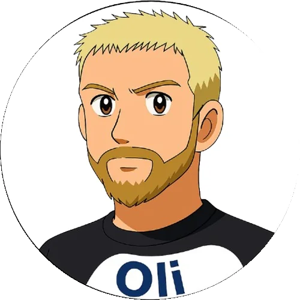

11
Manager
34
Spieltage
1A
Expertenwissen
💡
Noch mehr Klugscheißen
Hintergrund
Was ist die Spreeliga?
Eine private Fantasy-Fußball-Liga seit 2005 – gegründet von Nico „Sche" Schneider, verbindet sie eine feste Gruppe von Freunden, die sich seit der Schulzeit kennen und die Leidenschaft für Fußball und Managerspiele teilen – über Wohnorte, Lebensumstände und mittlerweile zwei Jahrzehnte hinweg.
21
Saisons
9
Verschiedene Meister
11
Aktive Manager
4
Gründungsmitglieder
Echte Leistung zählt
Kein Zufall, keine Würfelei. Punkte werden ausschließlich durch die realen Bundesliga-Leistungen der Spieler vergeben – bewertet nach der legendären Kicker-Notengebung.
Freundschaft über Jahre
Was 2005 als Schulfreundschafts-Projekt begann, ist heute ein verbindendes Ritual – jede Woche ein Anlass, sich zu freuen, aufzuregen und wieder neu anzufeuern.
Unvergessliche Momente
Geteilte Meisterschaften, ein historischer Skandal, Tabellenletzter-zu-Erster-Tausch in einer Saison – die Spreeliga schreibt ihre eigene Geschichte.
Lebendige Statistikkultur
Ewige Tabelle, Hin- und Rückrundenvergleich, Spieltagssiege – über zwei Dekaden gewachsene Datenpflege macht jede Saison messbar und vergleichbar.
„Etwas, worauf man sich jede Woche neu freuen konnte und worüber man sich jeden Montag neu aufregen konnte."— Aus der Chronik der Spreeliga
Saison 2026/27 · Spreeliga Bundesliga
Zwischenstand
Spieltagspunkte nach Spieltag 1 von 34 – die Saison läuft.
| # | Manager | Punkte |
|---|---|---|
| 1 |  Oliver Nicklisch |
90 |
| 2 | Nico Schneider | 79 |
| 3 |  Gordon Winkel Gordon Winkel |
76 |
| 4 | Christoph Kemmner | 67 |
| 5 | Chris Schulze | 63 |
| 6 | Tim Kurz | 59 |
| 7 | Fabian Schulz | 44 |
| 8 | Michael Marienwald | 42 |
| 9 | Marco Woelki | 40 |
| 10 | Nico Wechsel | 32 |
| 11 | Lukas Hechmann | 30 |
Tools & Auswertungen
Was kannst du hier machen?
Alle Tools der Spreeliga Monolog – von der Rangliste bis zum detaillierten Kadervergleich.
Live
Vergleichs-Generator
Manager-Vergleich, Kaderanalyse und Spielerprofile mit Powerindex. Saison 2026/27 live.
→ Zur Übersicht
Live
Spreeklasse
Die zweite Liga des Spreeliga-Universums. Gesamtübersicht und alle Saisons der Spreeklasse (2. Bundesliga).
→ Zur Spreeklasse

Spreeliga Monolog · Videos
Alle Spieltage als Monolog, Dialog & Triolog – plus Transfer-Updates und Specials direkt auf YouTube.
→ Alle Videos ansehen
Bald
Umfragen
Abstimmungen und Umfragen rund um die Liga – Transfers, Topelf der Saison, Manager-Awards und mehr.
→ In Entwicklung
Bald
Erweiterte Statistiken
Formkurven, Saisonphasen-Analyse, Head-to-Head Direktvergleiche und historische Daten.
→ In Entwicklung
Live
Geschichte der Spreeliga
Alles aus der Chronik – 21 Saisons Spreeliga. Meister, Skandale, Transfers und unvergessliche Spieltage aus zwei Jahrzehnten.
→ Zur Chronik
Live
Spreeoberliga
Die dritte Liga des Spreeliga-Universums. Gesamtübersicht und alle Saisons der Spreeoberliga (3. Liga).
→ Zur Spreeoberliga
Gesamtwertung seit 2005/06
Die Ewige Tabelle
Kumulierte Punkte aller Manager seit Ligagründung. Stand: Mai 2026.
| # | Name | Saisons | Punkte | Ø / Saison | Titel | Ø Platz | Spieltagssiege ab 2020/21 |
|---|---|---|---|---|---|---|---|
| Aktive Manager | |||||||
| 1 | Oliver Nicklisch | 21 | 28.433 | 1.354 | 8 × | 2,7 | 31 |
| 2 | Gordon Winkel |
21 | 26.691 | 1.271 | 4 × | 4,0 | 34 |
| 3 | Nico Schneider | 21 | 25.468 | 1.213 | 3 × * | 4,5 | 23 |
| 4 | Marco Woelki | 21 | 24.702 | 1.176 | 2 × | 5,3 | 25 |
| 5 | Nico Wechsel | 20 | 24.582 | 1.229 | 1 × | 4,5 | 23,5 |
| 6 | Christoph Schlegel | 16 | 19.722 | 1.233 | 2 × | 4,8 | 30 |
| 7 | Tim Kurz | 11 | 16.952 | 1.541 | 1 × | 3,2 | 23 |
| 11 | Michael Marienwald | 2 | 3.726 | 1.863 | – | 5,5 | 6,5 |
| 12 | Fabian Schulz | 2 | 3.588 | 1.794 | – | 4,5 | 8 |
| Ehemalige Manager | |||||||
| 8 | Jack Neca | 12 | 9.920 | 827 | – | 6,5 | – |
| 9 | Matthias Steinicke | 8 | 6.170 | 771 | – | 7,0 | – |
| 10 | Gordan Tremer | 4 | 4.240 | 1.060 | 1 × * | 4,3 | – |
| 13 | Martin Barth | 3 | 1.910 | 637 | – | 7,0 | – |
| 14 | Julian Schrobbach | 2 | 1.824 | 912 | – | 4,5 | – |
| 15–23 | Jörg Lindemann · Gabor Fischer · Marco Krüger · Friderike Stiehr · Nils Urdahl · Wilhelm Hufnagel · Nico Egal · Jan Rogge · Sebastian Schwiening (je 1 Saison) | ||||||
* geteilte Meisterschaft 2011/12 · Spieltagssiege werden seit 2020/21 erfasst
Die Teilnehmer